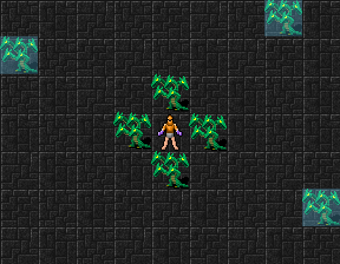
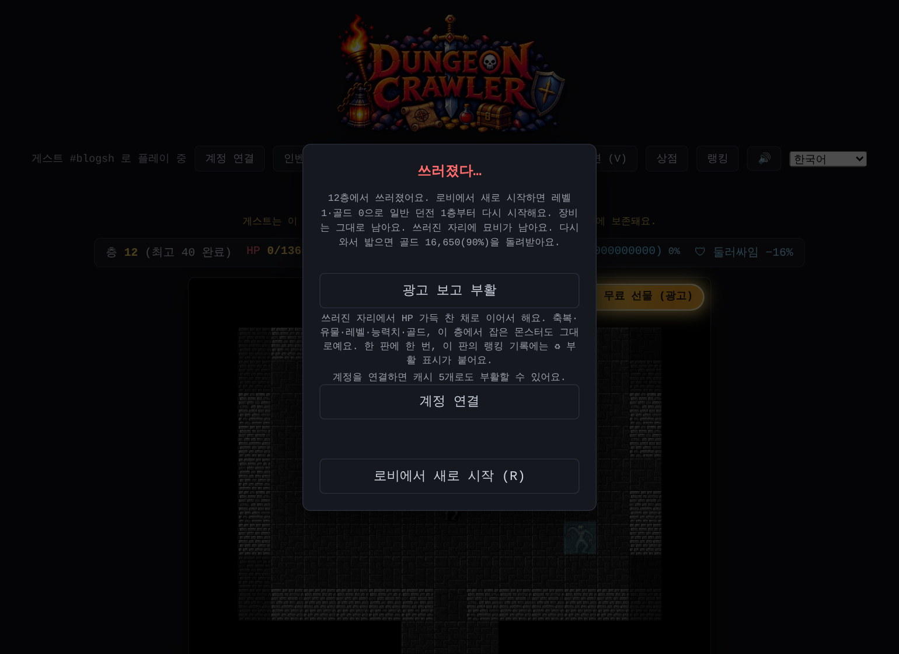
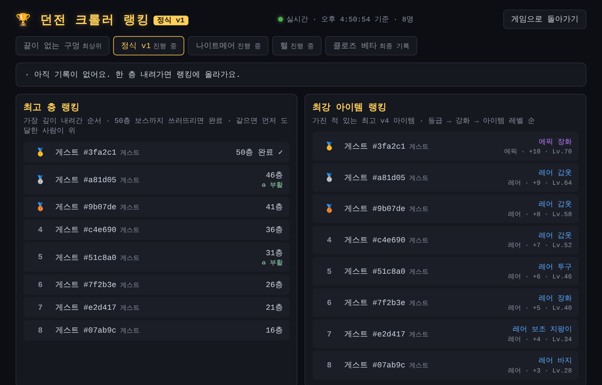
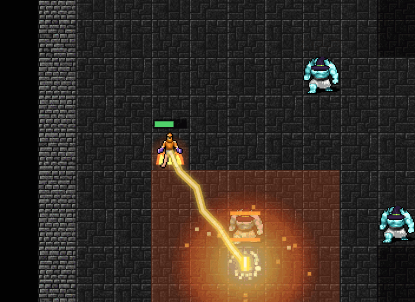
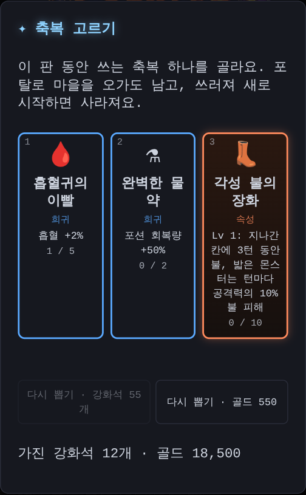
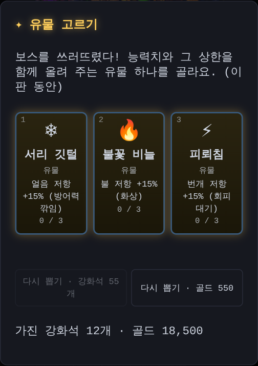
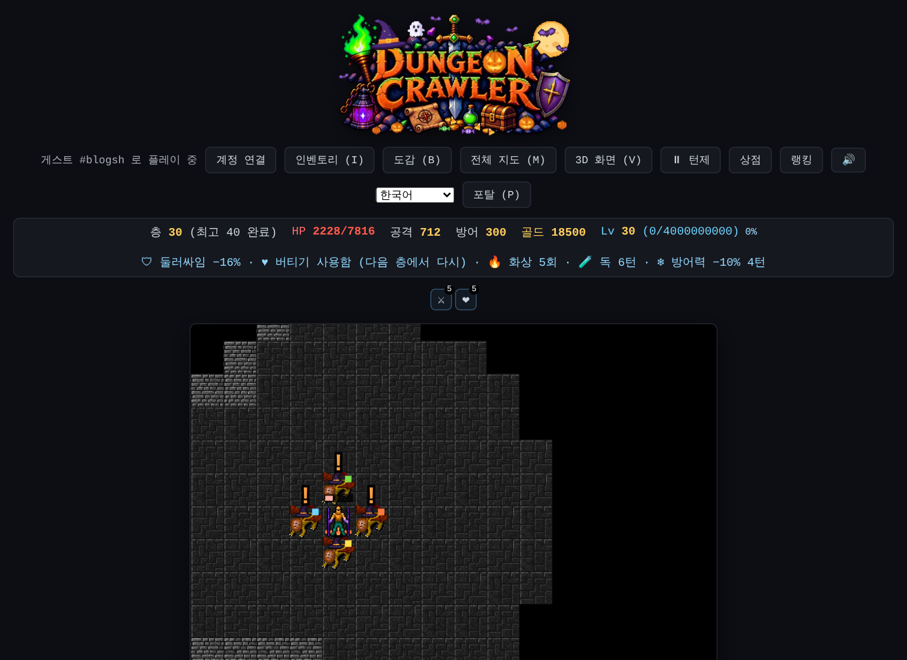
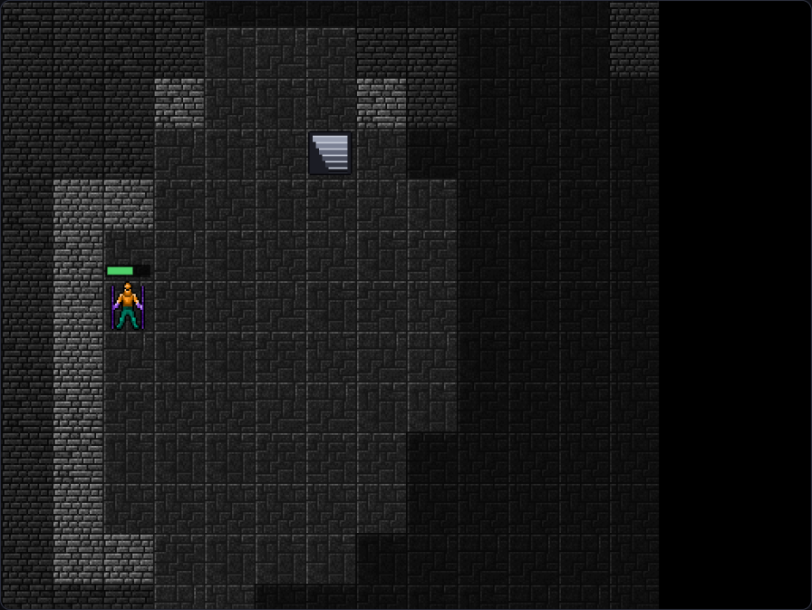

부활은 그 자리에서, 각성 스킬과 새 축복, 몬스터 공격 속성, 가까운 계단
깊은 층까지 가는 게 랭킹이라, 아깝게 쓰러졌을 때 한 번 더 기회가 있어야 해요. 그런데 지금까지 부활은 쓰러진 층을 처음부터 다시 시작했어요. 몬스터도 모두 새로 나와서, 거의 다 잡아 둔 층이면 손해였어요. 값도 캐시 10개였고, 광고 부활은 하루에 한 번뿐이었어요.
쓰러진 자리에서 이어서
이제 부활하면 쓰러진 그 자리에서 HP 가득 찬 채로 이어서 해요. 이 층에서 잡은 몬스터는 그대로 없고, 축복·유물·레벨·능력치·골드도 모두 그대로예요.
바로 다시 쓰러지지 않게 잠깐 무적이 되고, 붙어 있던 몬스터는 몇 칸 밖으로 밀려나요. 날아오던 탄과 강타 예고도 사라져요.

캐시 5개 또는 광고
부활 값은 캐시 10개에서 5개로 내렸어요. 광고를 보고 부활하는 건 하루 횟수 제한이 없어졌어요. 대신 지금처럼 한 판에 한 번만 쓸 수 있어요. 쓰러진 채로 창을 닫았다가 다시 와도, 그 층 그대로 부활할 수 있어요.

랭킹에 부활 표시
부활을 쓴 판에서 세운 층 기록에는 랭킹에 초록색 ♻ 부활 표시가 붙어요. 부활 없이 더 깊이 내려가 기록을 새로 세우면 표시는 사라져요. 누가 부활 없이 내려갔는지 랭킹에서 바로 보여요.

35층에 오면 거의 다 만렙이었어요
레벨이 오를 때마다 축복을 하나씩 골랐더니, 35층쯤이면 속성 스킬은 Lv 10이고 공격력·HP·방어력 축복도 거의 끝까지 올라 있었어요. 더 고를 게 없으니 축복 고르는 재미도 줄었어요.
그래서 축복은 이제 2레벨마다 하나씩 골라요. 던전에 처음 들어갈 때(1층) 받던 축복도 없앴어요. 대신 끝까지 올린 다음에 고를 것을 새로 만들었어요.
각성 스킬
속성 스킬이 Lv 10이 되면, 그 속성의 각성 스킬이 축복 후보로 나와요. 각성 스킬도 Lv 10까지 올라가요.
- 👢 각성 불의 장화: 내가 지나간 칸에 잠깐 불이 붙어요. 그 위를 밟은 몬스터는 턴마다 불 피해를 입어요
- 🧊 각성 얼음 보호막: 방어력이 올라요 (Lv 10이면 +50%)
- 🧲 각성 전자기장: 몇 턴마다 둘레 몬스터의 최대 HP를 %로 깎아요. 다른 스킬보다 자주 터지지는 않지만, 레벨이 오르면 범위가 1칸에서 4칸까지 넓어져요. 보스는 절반만 깎여요

새 축복과 유물
- 🩸 흡혈귀의 이빨: 흡혈 +2% (최대 5번)
- ⚗ 완벽한 물약: 물약 장인을 끝까지 올리면 나와요. 한 번 고르면 포션 회복량 +50%, 두 번 고르면 포션 하나로 HP가 가득 차요
- 넓은 눈·숨 고르기·황금 손은 뺐어요

보스를 쓰러뜨리면 고르는 유물에는 속성 저항 넷이 생겼어요. 🔥 불꽃 비늘 · ❄ 서리 깃털 · ⚡ 피뢰침 · 🧪 해독 약초. 아래 몬스터 공격 속성을 덜 받게 해 줘요.

몬스터 공격에도 속성이 붙어요
일반 던전 10층부터 몬스터 일부의 공격에 속성이 붙어요. 깊이 내려갈수록 많아져요. 몬스터 옆의 작은 색 점으로 알 수 있어요.
- 🔥 불: 맞으면 화상, 몇 턴 동안 조금씩 피해
- 🧪 독: 화상과 비슷하게 턴마다 피해
- ❄ 얼음: 잠깐 방어력이 깎여요
- ⚡ 번개: 회피를 한 턴 늦게 쓸 수 있어요
화상과 독은 맞은 피해를 기준으로 계산해서, 방어력이 높으면 같이 작아져요. 버티기로 HP 1이 남으면 화상과 독도 풀려요.

계단은 화면 안 가까운 곳에
20층이 넘으면 층이 아주 넓은데, 마지막 몬스터를 잡으면 계단이 너무 먼 곳에 생겼어요. 이제는 지금 보이는 화면 안에서, 바로 옆은 아니고 몇 칸 걸어가야 하는 곳에 계단이 나와요.

나이트메어와 헬도 맞췄어요
축복 2레벨마다, 몬스터 공격 속성까지 넣고 1층부터 한 판을 시뮬레이션으로 많이 돌려 봤어요. 일반 던전 50층까지 가는 비율은 예전과 비슷한 약 60%예요.
그런데 나이트메어와 헬은 오히려 너무 쉬워졌어요. 약한 축복 셋이 빠지니 고르는 축복이 모두 쓸모 있는 것이 되어서예요. 그래서 나이트메어와 헬 몬스터를 조금 세게 했어요. 이어서 들어가면 나이트메어 약 84%, 헬 약 52%가 끝까지 가요 (예전 83%, 40%).